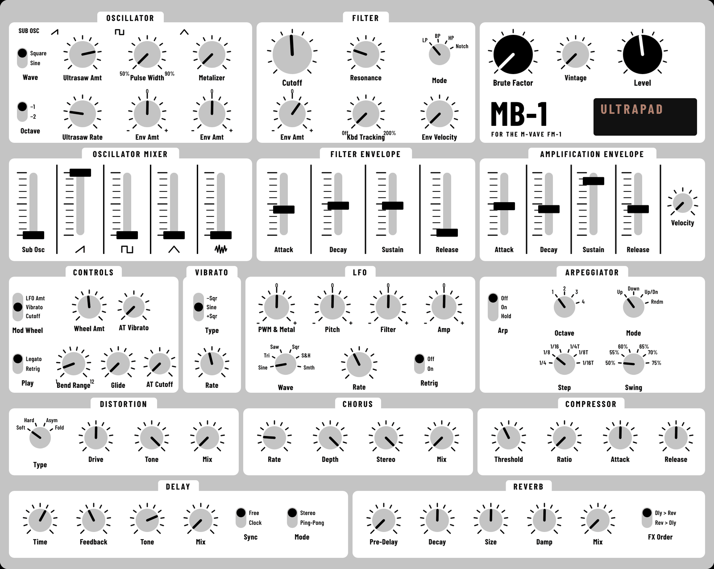
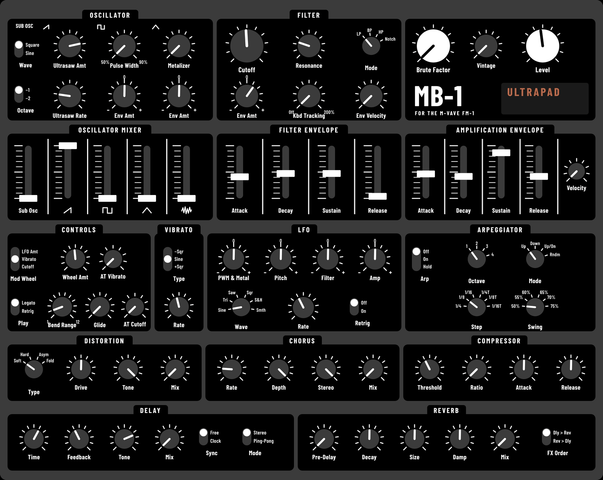

for the M-VAVE FM-1
An aggressive monophonic virtual analog synthesizer for the M-VAVE FM-1, after the MiniBrute and measured against it.
MB-1 turns the FM-1 into one fat analog-style voice: a sawtooth with Ultrasaw, a square with pulse width, a triangle with Metalizer, a sub oscillator and noise into a resonant 12 dB multimode filter with Brute Factor. Every knob was measured, setting by setting, against Arturia's MiniBrute V plugin.
128 patch slots, an arpeggiator, a 64-step sequencer and five effects. Install it from the browser, and put the stock firmware back whenever you like.

Five sources, the Brute filter, two ADSRs, LFO and vibrato.
Four banks of 32; every parameter saved with the patch.
Each on its own MIDI CC, for a controller or a DAW.
An arpeggiator and an 8-pattern step sequencer.
Distortion, Juno-style chorus, delay, reverb and a compressor.
32 patches to start from, and RANDOM for the next one.
Bank A comes with 32 patches: basses, leads, pads, plucks and an arpeggio, each with its effects and arpeggiator settings. Press HOME three times for a new random patch, then SAVE it to any of the 128 slots under a name of your own.
The video is MB-1 itself, recorded from its simulator: the same code, sound and screen as on the FM-1.
Edit a patch on a patch sheet, and share it as one.
The MiniBrute keeps no patches, so its players write them down on paper patch sheets and pass them around. MB-1's patch editor is one of those sheets that plays: every value of a patch on one panel, heard as you turn it, in the browser and on the FM-1 at the same time.
- Reads the FM-1's 128 slots over USB, and stores your edits back.
- Plays in the browser with MB-1's own engine, the same code the FM-1 runs.
- Saves patches and banks as .syx, and the sheet itself as SVG, PNG or a print.


Measured, not guessed
Oscillators, the Steiner-Parker-style filter, Brute Factor, the envelopes and every effect were compared against MiniBrute V renders, knob position by knob position, until they matched.
Made for its two cores
The voice and the distortion, chorus and compressor run on the main core with no added latency; the delay and reverb on the second. Its screen shows the load, so you can see the headroom.
Open, and reversible
MIT-licensed source on GitHub. The installer checks the package, writes it from Chrome or Edge, and can put M-VAVE's own firmware back. Also listed on The Firmware Hub, where new releases appear by themselves.